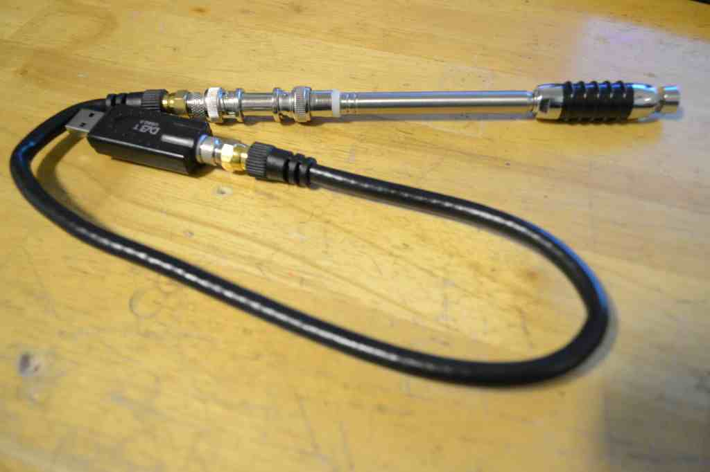

|| RTL-SDR and Wireless Microphones, Author: xor-function || 10/08/2015 || Back to main
Disclaimer: Mind your local laws, use discretion and common sense.
This is something that I wanted to tinker with to see what could be done and the results have
given me a few ideas on re-purposing the wireless microphone circuit board. Anyways what is needed
to do this yourself is an is a usb DVB-T dongle and some open source software. This software
turns the DVB-T USB dongle into a software defined radio which has the added benefit of
capabilities to that of a spectrum analyzer which can be very useful for finding a specific
signal transmission.
The OS I'm using in the video is Ubuntu if you want to do this in windows your going to
have to look into [sdrsharp].
The important feature of the DVB-T usb dongle is that it's rtl2832U based.
I bought mine for 19 bucks off of amazon at the time.
Heres a [compatibility list]
Although not necessary, for better range and signal quality I got UHF/VHF antenna with
some adapters from pal to coax and from coax to bnc.

Purchased the antenna and adapters from radio shack
To install the software follow the guides for [GQRX] or [SdrSharp]
that are hosted on there respective project websites were details are covered pretty well.
After that is simple as doing the FM radio test to see if it working. But this time instead
of just sticking to the regular radio station frequencies check the 110Mhz to 250Mhz range.
Depending on the manufacture they may transmit on different ranges so you may have to do
some signal hunting. A good start would be to check the manufactures documentation
(manual, guides, specs) and see if the operating frequency range is mentioned.
This is just scratching the surface with what software defined radio can do, but it also
makes one wonder how many different devices function like this wireless microphone
and just broadcast openly.